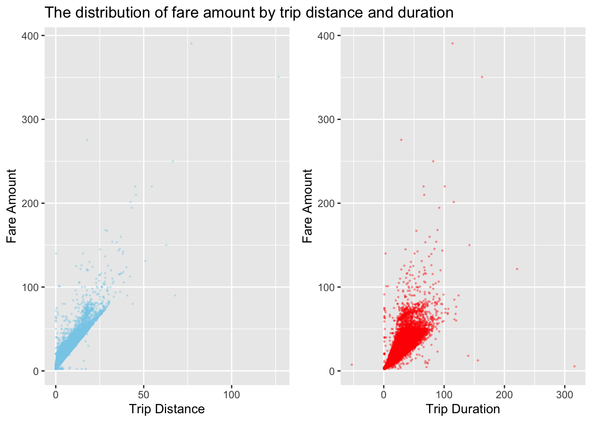
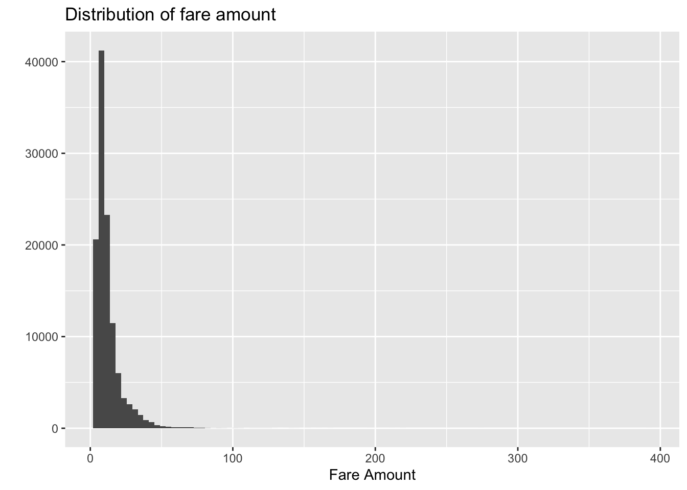

Exploration of potential factors that impact fare amount and tip percent
We are interested in the factors that potentially effect the revenue of each taxi trip. The total amount is the sum of fare amount, tax, tip amount, tolls amount and improvement surcharge. Tolls amount is fixed. Since tax and tip are dependent on fare amount, we are interested in fare amount. In addition, even though most of time the tip percent will fall between 15% and 20% in NYC, it still varies across difference trips. We also hope to explore the reasons for higher tip percent.
Fare Amount
The rule of standard metered taxi fare is too complicated . It is difficult for a passenger to estimate the fare amount refering to such complext instructions.
According to the codebook from the TLC website, the fare amount is defined as “The time-and-distance fare calculated by the meter”. Therefore, we hope to explore the association between fare amount and trip distance and duration. If possible, we also want to roughly predict the fare amount by duration and distance.
Data was queried from year 2018, covering all NYC boroughs. The duration is calculated from drop-off time and pick-up time. There might be data entry error since a large number of records with fare_amount of 52 have different distance and duration. We are also not interested in the trips with no time or a long duration, i.e. longer than 6 hours. The initial charge of NYC Yellow Cab is 2.5 dollars. Therefore, we exclude the data with duration longer than 360 or equals to 0, fare amount of 52 or less than 2.5.
pilot <-
taxi_2018 %>%
filter(
passenger_count != 0,
trip_distance != 0,
total_amount > 0,
fare_amount != 0
) %>%
mutate(tpep_pickup_datetime = as.character(tpep_pickup_datetime),
tpep_dropoff_datetime = as.character(tpep_dropoff_datetime)) %>%
separate(tpep_pickup_datetime, into = c("a","b"), sep = " ") %>%
separate(a, into = c("pick_year","pick_month","pu_date"), sep = "-") %>%
separate(b, into = c("pu_hour","pu_min"), sep = ":") %>%
separate(tpep_dropoff_datetime, into = c("c","d"),sep = " ") %>%
separate(c,into = c("drop_year","drop_month","do_date"),sep = "-") %>%
separate(d, into = c("do_hour","do_min"), sep = ":") %>%
dplyr::select(-pick_month,-drop_month,-pick_year,-drop_year) %>%
mutate(
month = as.integer(month),
pu_date = as.integer(pu_date),
pu_hour = as.integer(pu_hour),
pu_min = as.integer(pu_min),
do_date = as.integer(do_date),
do_hour = as.integer(do_hour),
do_min = as.integer(do_min)
) %>%
left_join(weather, by = c("month" = "month", "pu_date" = "day")) %>%
left_join(zone_lookup, by = c("pu_location_id" = "location_id")) %>%
rename(
pu_boro = borough,
pu_zone = zone
) %>%
left_join(zone_lookup, by = c("do_location_id" = "location_id")) %>%
rename(
do_boro = borough,
do_zone = zone
) %>%
dplyr::select(-pu_location_id, -do_location_id)
reg = pilot %>%
mutate(
duration = case_when(
pu_date != do_date ~ do_min - pu_min + (60 *(do_hour - pu_hour + 24)),
pu_date == do_date ~ do_min - pu_min + (60 *(do_hour - pu_hour) )
),
tip_percent = tip_amount/fare_amount
) %>%
filter(duration != 0,
fare_amount != 52,#There might be data entry error since all records that fare_amount is 52 have different distance and duration#
duration <= 360, #There are some points gathering with a long duration without long distance, which can be miscoding or influntial outliers, so we should exclude these data.#
fare_amount >= 2.5 #There can be data entry error since the initial charge of NYC taxi is $2.5, so we exclude those with fare amount < $2.5.#
)
set.seed(1)
reg_plot = reg %>%
sample_frac(size = 0.1, replace = FALSE)Scatterplot of fare amount
fare_distance = reg_plot %>%
ggplot(aes(x = trip_distance, y = fare_amount)) +
geom_point(alpha = 0.3, color = 'skyblue',size = 0.3) +
labs(
title = "The distribution of fare amount by trip distance and duration",
x = "Trip Distance",
y = "Fare Amount"
)
fare_duration = reg_plot %>%
ggplot(aes(x = duration, y = fare_amount)) +
geom_point(alpha = 0.3, color = 'red', size = 0.3) +
labs(
x = "Trip Duration",
y = "Fare Amount"
)
fare_distance + fare_duration
According to the scatterplots, there is a positive relationship among trip distance and fare amount. Trip duration is also positively associated with fare amount.
Building linear regression model of fare amount
The outcome of linear regression model is fare amount, and the predictors include trip distance and duration.
fit1 = lm(fare_amount ~ duration + trip_distance , data = reg) %>%
broom::tidy() %>%
janitor::clean_names() %>%
mutate(p = round(p_value,3))
fit1 = lm(fare_amount ~ duration + trip_distance , data = reg )
summary(fit1) %>% broom::tidy() %>% knitr::kable(digit = 2)| term | estimate | std.error | statistic | p.value |
|---|---|---|---|---|
| (Intercept) | 2.02 | 0 | 503.87 | 0 |
| duration | 0.35 | 0 | 1018.08 | 0 |
| trip_distance | 2.00 | 0 | 1735.95 | 0 |
summary(fit1) %>% broom::glance() %>% knitr::kable(digit = 2)| r.squared | adj.r.squared | sigma | statistic | p.value | df |
|---|---|---|---|---|---|
| 0.93 | 0.93 | 2.58 | 7282469 | 0 | 3 |
The p-value of the two coefficients are both < 0.05. It is seen that both variables (duration, trip_distance) are statistically significant at 5 % level of significance.
Diagnostics
Further we can plot the model diagnostic checking for other problems such as normality of error term, heteroscedasticity etc.
par(mfrow=c(2,2))
plot(fit1)
The plots indicate a lot of outliers, which make the model violate the linear regression assumptions.
reg_plot %>%
ggplot(aes(x=fare_amount)) +
geom_histogram(bins = 100) +
labs(
title = "Distribution of fare amount",
x = "Fare Amount",
y = " "
)
In addition, we realized that the duration will increase if the trip distance increased. Therefore, possibly there is multicollinearity problem in this model as well. For further diagnosis of the problem, let us first look at the pair-wise correlation among the explanatory variables.
##
## Call:
## omcdiag(x = pred, y = reg$fare_amount)
##
##
## Overall Multicollinearity Diagnostics
##
## MC Results detection
## Determinant |X'X|: 0.4569 0
## Farrar Chi-Square: 900176.8348 1
## Red Indicator: 0.7369 1
## Sum of Lambda Inverse: 4.3772 0
## Theil's Method: 0.1593 0
## Condition Number: 4.8743 0
##
## 1 --> COLLINEARITY is detected by the test
## 0 --> COLLINEARITY is not detected by the testpcor(pred, method = "pearson")## $estimate
## trip_distance duration
## trip_distance 1.0000000 0.7369451
## duration 0.7369451 1.0000000
##
## $p.value
## trip_distance duration
## trip_distance 0 0
## duration 0 0
##
## $statistic
## trip_distance duration
## trip_distance 0.000 1168.769
## duration 1168.769 0.000
##
## $n
## [1] 1149265
##
## $gp
## [1] 0
##
## $method
## [1] "pearson"imcdiag(pred, reg$fare_amount)##
## Call:
## imcdiag(x = pred, y = reg$fare_amount)
##
##
## All Individual Multicollinearity Diagnostics Result
##
## VIF TOL Wi Fi Leamer CVIF Klein IND1 IND2
## trip_distance 2.1886 0.4569 1366021 Inf 0.676 -0.2686 0 0 1
## duration 2.1886 0.4569 1366021 Inf 0.676 -0.2686 0 0 1
##
## 1 --> COLLINEARITY is detected by the test
## 0 --> COLLINEARITY is not detected by the test
##
## * all coefficients have significant t-ratios
##
## R-square of y on all x: 0.9269
##
## * use method argument to check which regressors may be the reason of collinearity
## ===================================The VIF, TOL and Wi columns provide the diagnostic output for variance inflation factor, tolerance and Farrar-Glauber F-test respectively. Since VIF<10 and TOL>0.1, there is no multicolinearity in the regression model.
Tip percent
In addition ot fare amount, we are also interested in the factors that may effect tip percent in each trip.
tip_distance = reg_plot %>%
filter(payment_type == 1) %>%
ggplot(aes(x = trip_distance, y = tip_percent)) +
geom_point(alpha = 0.3, color = 'skyblue', size = 0.1) +
labs(
title = "Tip percent by Trip Distance, Passenger Count, Precipitation",
x = "Trip Distance",
y = "Tip Percent"
)
tip_passenger = reg_plot %>%
filter(payment_type == 1) %>%
ggplot(aes(x = passenger_count, y = fare_amount)) +
geom_point(alpha = 0.3, color = 'palevioletred2', size = 0.1) +
labs(
x = "Passenger Count",
y = "Tip Percent"
)
tip_prcp = reg_plot %>%
filter(payment_type == 1) %>%
ggplot(aes(x = prcp, y = tip_percent)) +
geom_point(alpha = 0.3, color = 'palegreen3', size = 0.1) +
labs(
x = "Precipitation",
y = "Tip Percent"
)
tip_distance + tip_passenger + tip_prcpThere is no clear pattern among tip percent and the three predictors. Therefore, we will not conduct regression analysis about tip percent.